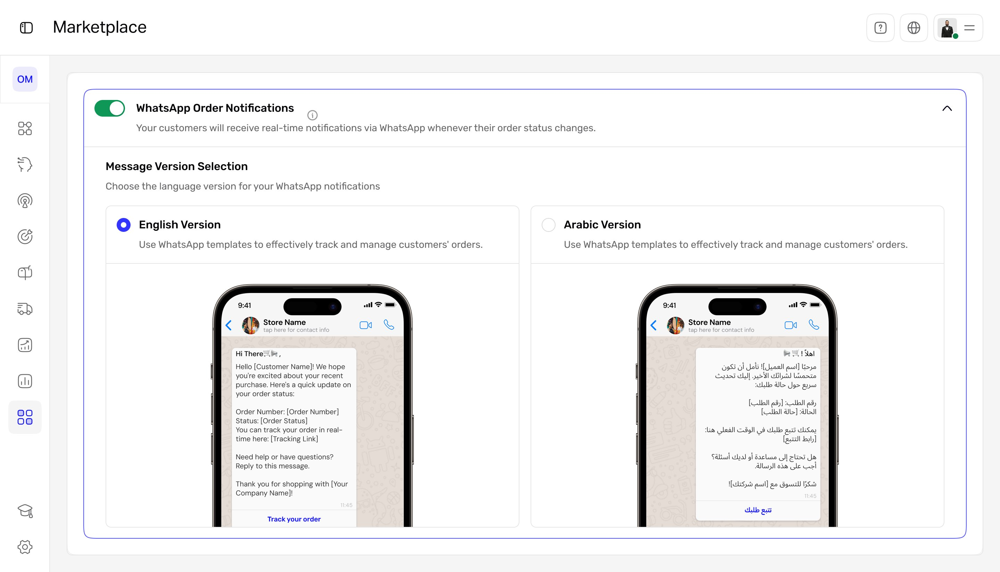
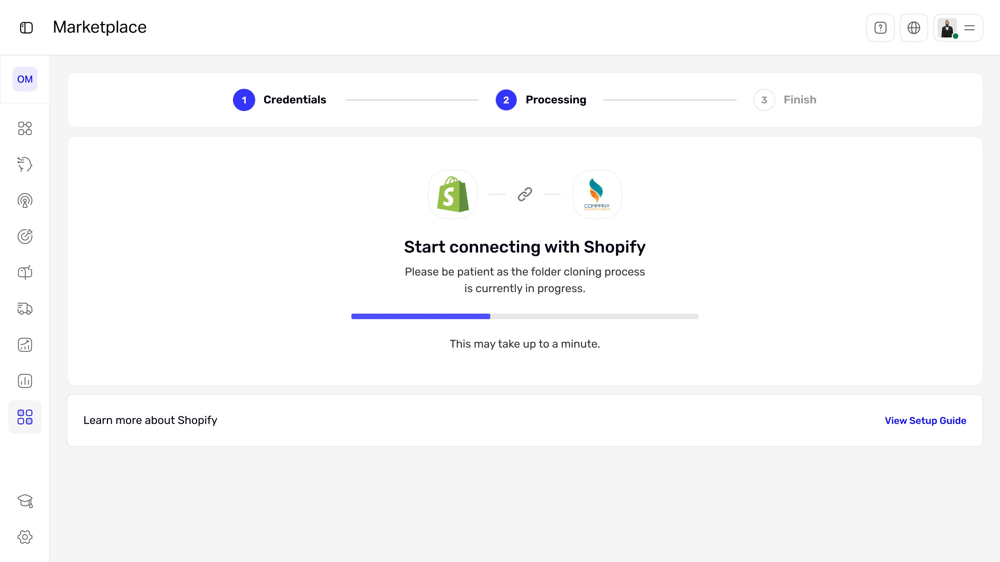
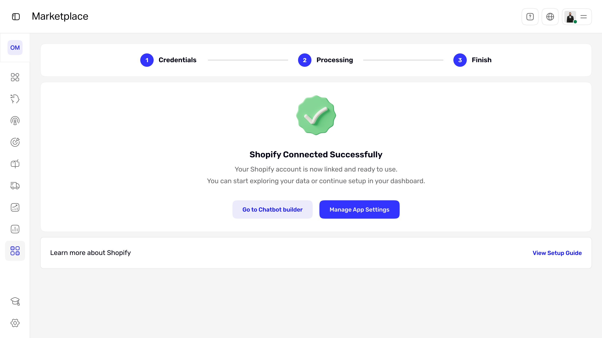
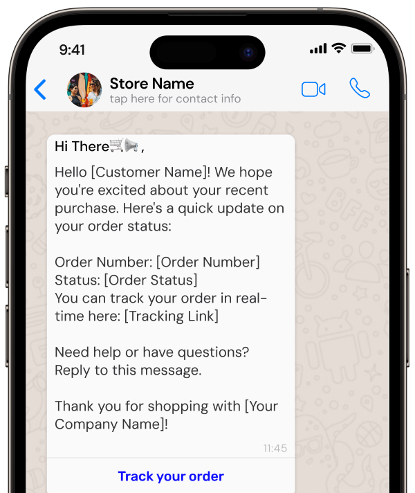
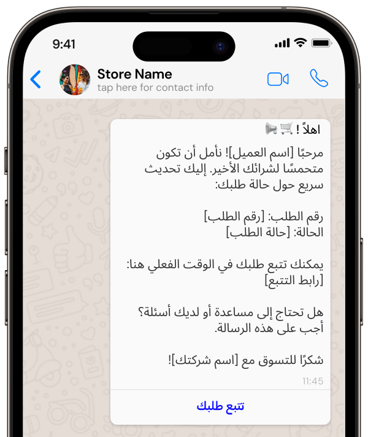

WhatsApp automation that turns itself on.
A Shopify connector that sends customers real-time WhatsApp order updates the moment a store connects, in English or Arabic, with zero setup for the merchant.

The moments that matter were going silent.
Small Shopify merchants lose sales when key order moments pass without a word to the customer: an abandoned checkout, a new order, a payment, a cancellation. I designed a connector app that messages customers automatically on WhatsApp at each of these moments, in their language, without the merchant configuring anything.
What wasn't working
- Lost revenue. Merchants had no automated follow-up on abandoned checkouts, so recoverable sales simply slipped away.
- Eroded trust. Customers got no instant confirmation after ordering or paying, which made stores feel unreliable.
- Manual and inconsistent. WhatsApp outreach was done by hand: slow, easy to forget, and different every time.
The important moments were silent, and silence costs money and confidence.
The blocker wasn't the channel. It was setup.
WhatsApp already wins on attention. The reason merchants weren't using it for order updates was the work of setting it up. So the design bet was simple: remove setup entirely and make automation the default.
Automation should be the default, not something merchants have to figure out.
Benchmarks: Baymard Institute (cart abandonment, 2025) and aggregated industry reports on WhatsApp vs. email open rates. Used to frame the opportunity, not results from this product.
How the design makes automation the default
The flow in three phases. Install and onboard, connect Shopify, activate WhatsApp. Each connection point has a clear failure and retry state so a silent error never recreates the original problem.
Default-on utility service
The messaging service is pre-enabled, so there is no setup screen to abandon. This is the decision the whole product rests on: it removes the friction that stops merchants from ever turning automation on.
Language as a one-tap choice
Merchants serve both Arabic and English customers, so the template step is a single choice with a live preview, not a configuration project. They see exactly what the customer will receive before saving.
Honest failure and retry
Both the Shopify and WhatsApp connections can fail. Each shows a plain error and an obvious retry, because a silent failure would recreate the exact silence the product exists to remove.
What the merchant sees
Notifications default to ON. The merchant only picks a language. The live preview shows the exact message the customer will get, so there is no guesswork.

One guided technical step. Connecting Shopify is a clear three-step flow with a visible progress state, so the only technical moment never feels stuck.

A clear finish, not a dead end. On success, the merchant lands on two obvious next actions instead of being left to wonder what happens now.


The same order update, generated automatically in English or Arabic from the merchant's one-tap choice.
How I'd judge the design
| Metric | Target | Why it matters |
|---|---|---|
| Merchant activation rate | ≥ 70% | Adoption |
| Abandoned checkout recovery | +15% | Sales |
| WhatsApp open rate | ≥ 85% | Engagement |
| Merchant satisfaction | ≥ 4/5 | Experience |
| Manual message reduction | ≥ 40% | Efficiency |
What changed
- Faster onboarding and higher activation
- Less friction during setup
- Higher customer trust through instant updates
- Reduced merchant workload
Automation stopped being a feature and became the default behavior.
If I did it again: defaulting a messaging feature to ON is a strong call. It drives adoption, but it raises consent and cost questions, since WhatsApp charges per conversation. I'd validate the default-on decision with real merchants first, add a clear first-run explanation and a one-tap pause, and instrument the funnel to confirm the activation and recovery targets actually hold in production.
Default-on vs. opt-in. I chose default-on to beat setup friction, accepting that it has to be paired with strong transparency and an easy off switch to stay trustworthy.